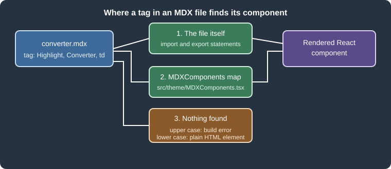

MDX and React Components
|
This content was generated with the assistance of AI and should be verified against the official documentation before being relied on in production. |
This page was written against Docusaurus 3.10.2 and checked on 2026-10-26. Docusaurus does not parse a document as plain
Markdown: by default every .md and .mdx file is compiled by MDX, a superset of Markdown that lets a document contain
JSX, import and export statements and {expressions}. This is what turns a documentation page into a React
component. The price is strictness: a stray brace or angle bracket that is harmless in CommonMark stops the build. The
examples below were built with the Pocket Units documentation site, a tiny units-conversion library written in Python
and C#, in a scratch site generated by create-docusaurus@3.10.2 (classic preset, TypeScript, React 19).
What MDX is and why Docusaurus uses it
MDX compiles a document into a JavaScript module that exports a React component. Markdown constructs become elements
(# becomes an h1, a table becomes a table), while JSX tags in the file become calls to the components they name.
Docusaurus builds on this in three ways:
-
A page can embed interactive React components, such as a live unit converter, next to prose.
-
A page can import other MDX files (partials) and reuse them, so a table of supported units is written once.
-
The site can register components globally (the MDX component scope), so authors do not import the same component in every page.
Docusaurus 3 uses MDX v3. The practical consequences of MDX v3 are stricter parsing, ESM-only plugins, and the rule that lower-case tags are always native HTML elements. These are covered below.
The following figure shows where a tag in an MDX file looks for its component.

Figure: a tag is first resolved against the import and export statements of the file, then against the global
MDXComponents map. An unknown upper-case tag fails the build, while a lower-case tag is rendered as a plain HTML
element.
A complete Pocket Units example
The scratch site serves its docs at the site root and has two components and one document.
The first component is a small highlight, written as a normal React component in TypeScript:
import type {ReactNode} from 'react';
type Props = {
children: ReactNode;
color?: string;
};
export default function Highlight({children, color = '#1d6f42'}: Props): ReactNode {
return (
<span style={{backgroundColor: color, color: '#fff', padding: '0.1rem 0.4rem', borderRadius: '4px'}}>
{children}
</span>
);
}Source: Docusaurus docs: MDX and React
The second component is interactive. It uses React state, so it is hydrated in the browser:
import {useState, type ReactNode} from 'react';
const FACTORS: Record<string, number> = {metre: 1, kilometre: 1000, foot: 0.3048, mile: 1609.344};
type Props = {
from: keyof typeof FACTORS;
to: keyof typeof FACTORS;
};
export default function Converter({from, to}: Props): ReactNode {
const [value, setValue] = useState(1);
const result = (value * FACTORS[from]) / FACTORS[to];
return (
<p>
<input type="number" value={value} onChange={(e) => setValue(Number(e.target.value))} /> {from} ={' '}
<strong>{result.toFixed(3)}</strong> {to}
</p>
);
}Source: Docusaurus docs: MDX and React
Both components are registered globally by wrapping the theme mapping, which is explained in the section on
MDXComponents below:
import MDXComponents from '@theme-original/MDXComponents';
import Highlight from '@site/src/components/Highlight';
import Converter from '@site/src/components/Converter';
export default {
...MDXComponents,
Highlight,
Converter,
};Source: Docusaurus docs: MDX and React
A partial holds the table of units. Its file name starts with an underscore, so Docusaurus does not publish it as a page:
| Unit | Metres |
| --- | --- |
| `METRE` | 1 |
| `KILOMETRE` | 1000 |
| `FOOT` | 0.3048 |
| `MILE` | 1609.344 |
These values are shared by the {props.language} implementation.Source: Docusaurus docs: MDX and React
Finally the document combines imports, an inline export, expressions, global components, a partial and tabs:
---
title: Pocket Units converter
---
import UnitsTable from './_units-table.mdx';
import CodeBlock from '@theme/CodeBlock';
import Tabs from '@theme/Tabs';
import TabItem from '@theme/TabItem';
export const Badge = ({children}) => (
<span style={{border: '1px solid currentColor', borderRadius: '4px', padding: '0 0.3rem'}}>{children}</span>
);
# Pocket Units converter
Pocket Units version <Badge>{frontMatter.version ?? '2.0.0'}</Badge> converts <Highlight>lengths</Highlight>
between units. This page has {toc.length} headings.
## Try it
<Converter from="kilometre" to="mile" />
## Supported units
<UnitsTable language="Python" />
## Source
<Tabs groupId="language">
<TabItem value="py" label="Python" default>
<CodeBlock language="python">{`convert(10, LengthUnit.KILOMETRE, LengthUnit.MILE)`}</CodeBlock>
</TabItem>
<TabItem value="cs" label="C#">
<CodeBlock language="csharp">{`Converter.Convert(10, LengthUnit.Kilometre, LengthUnit.Mile)`}</CodeBlock>
</TabItem>
</Tabs>Source: Docusaurus docs: MDX and React
npx docusaurus build succeeded, and the static HTML of the page contains the rendered components. This is an extract
of the generated build/pocket-units/converter/index.html, with attributes shortened:
<p>Pocket Units version <span style="border:1px solid currentColor;...">2.0.0</span> converts
<span style="background-color:#1d6f42;color:#fff;...">lengths</span> between units.
This page has <!-- -->3<!-- --> headings.</p>
...
<p><input type=number value=1 /> <!-- -->kilometre<!-- --> = <strong>0.621</strong> <!-- -->mile</p>
...
<p>These values are shared by the <!-- -->Python<!-- --> implementation.</p>Source: Docusaurus docs: MDX and React
The result confirms the points explained in the next sections: Highlight and Converter needed no import, the
partial received its language prop as props.language, frontMatter and toc were available as page globals, and the
useState component was pre-rendered with its initial value (1 kilometre is 0.621 mile) and is hydrated in the browser.
The tabs and the interactive input were not exercised in a browser here.
JSX in Markdown
Inside an MDX document, Markdown and JSX mix freely:
-
A tag such as
<Highlight>starts a JSX element. A component is written with an upper-case first letter. -
Attribute values are strings in quotes or JavaScript expressions in braces:
<Converter from="kilometre" />or<Badge color={someValue} />. -
Inline styles are style objects, not CSS strings:
style={{backgroundColor: 'red'}}, neverstyle="background: red". -
A paragraph that starts with
importorexportis JavaScript; everything else is prose. -
Braces in prose are JavaScript expressions. The page above prints
{toc.length}as3.
Interleaving JSX and Markdown can wrap content in extra p elements. When this produces unwanted spacing, the Docusaurus
migration guide recommends putting the JSX on a single line or wrapping the block in { and }.
Docusaurus makes three values available in every document as globals: frontMatter (the front matter fields),
toc (the heading tree) and contentTitle (the text of the first h1, or undefined if there is none). The example
used frontMatter and toc.
Imports
An import statement brings a component, a partial or any other module into the document. Three kinds of paths are
common:
| Path form | Example | Meaning |
|---|---|---|
Theme components |
|
Components shipped by the theme ( |
Site files |
|
|
npm packages and relative paths |
|
Any installed package, or a file relative to the document. |
The Docusaurus documentation recommends moving complex components into a separate .js or .tsx file instead of
declaring them inline in the document: inline declarations have limited editor support, can cause parsing errors and are
hard to reuse. The Badge of the example is a deliberately tiny inline export.
Source: Docusaurus docs: MDX and React
Partials
A file whose name starts with an underscore (_units-table.mdx) does not create a page, so it is only useful when it is
imported by other documents. A partial is imported like a component, and the props passed by the importer are available
in the partial as props. The same mechanism lets the Python and C# guides of Pocket Units share one table of units.
Importing source code as text
The documentation also describes importing a source file as a raw string with the raw-loader package and showing it
with the CodeBlock component:
import CodeBlock from '@theme/CodeBlock';
import ConverterSource from '!!raw-loader!./converter.py';
<CodeBlock language="python">{ConverterSource}</CodeBlock>Source: Docusaurus docs: MDX and React
The official page marks this feature as experimental. This example was not executed here because it needs the
raw-loader package, which is not part of the scratch site.
Exports
Only a paragraph that starts with export is parsed as JavaScript. The example exports the arrow function Badge,
which can then be used as <Badge> further down the same document. An export is local to its document: other documents
cannot import it from the rendered page, so a component that several documents need belongs in a .tsx file or in the
global scope.
The MDXComponents scope
Importing the same component in every document does not scale. Docusaurus resolves tags through a component map that the
theme provides as @theme/MDXComponents. It contains the elements Docusaurus overrides (for example the code block
renderer) and is passed to every MDX document. To add components, create src/theme/MDXComponents.tsx
(or .js) that spreads the original map, imported through the @theme-original alias, and adds the new entries, as in
the example above. After this, <Highlight> and <Converter> work in every document without an import, which was
verified in the build above.
Rules to remember:
-
Use upper-case names. Since MDX v3, a lower-case tag is always rendered as the native HTML element, so a mapping such as
blockquote: MyBlockquotein a custom map is not used for hand-written tags. The migration guide says that custom mappings must be upper-case in v3. -
Spread
...MDXComponentsfirst. Omitting it removes the default mappings, for example forcode. -
An MDX file that you import into a React page (a
.tsxpage that doesimport Content from './content.mdx') must be rendered insideMDXContentfrom@theme/MDXContent, otherwise the global scope is not provided. This case was not executed here. -
Swizzling sub-components such as
@theme/MDXComponents/Codecustomizes one element. See Styling, theming and swizzling.
Source: Docusaurus docs: MDX and React
A missing component is an error, not a warning. With <Missing /> in a document the compilation succeeds but static
site generation fails for that page:
[ERROR] Error: Unable to build website for locale en.
[cause]: Error: Docusaurus static site generation failed for 1 paths:
- "/bad"
...
[cause]: Error: Expected component `Missing` to be defined: you likely forgot to import, pass, or provide it.An unclosed tag fails earlier, during MDX compilation:
Cause: Expected a closing tag for `<Highlight>` (3:1-3:12) before the end of `paragraph`MDX v3 strictness
CommonMark treats {, < and <https://...> as ordinary text or HTML. MDX gives them meaning: { starts a
JavaScript expression and < starts a JSX element. Every use that is not valid JavaScript or JSX is a compilation error
that fails the whole build, not a warning. The table lists what was tried in the scratch site, with the message printed
by docusaurus build.
| Document text | Result | Message (shortened) |
|---|---|---|
|
Build fails |
|
|
Build fails |
|
|
Build fails |
|
|
Build fails |
|
|
Build fails |
|
|
Build fails |
|
|
Build fails during static site generation |
|
The migration guide lists three ways to write a literal brace and three for an angle bracket. All of them were built successfully in a single document:
# Fixed
The result has shape `{value: number, unit: string}`, or \{value\}, or {value}.
Use Android version <5, \<5 or `Array<T>`. See [example](https://example.com).
{/* a JSX comment */}
## Heading \{#my-id}The generated HTML shows the brace and angle-bracket variants as text ({value}, <5, and <code>Array<T></code>),
the comment disappears, and the escaped heading identifier \{#my-id} produced the anchor my-id with the heading text
Heading.
Practical rules:
-
Put code, JSON-like shapes and generics in inline code or a fenced block. Prose that contains a brace or a
<needs\{,\<,{or<. -
Replace an autolink
<https://...>by[text](https://...)or by the bare URL. -
Write comments as
{/* ... */}. -
A text such as
:Inventcan be read as a directive and dropped; the guide suggests:or a backslash. -
Indented text no longer produces a code block: use fenced blocks.
Compatibility options for older content
Docusaurus keeps three switches under markdown.mdx1Compat that accept MDX v1 syntax while a site is migrated:
| Option | What it keeps working |
|---|---|
|
HTML comments |
|
The old title syntax |
|
Explicit heading IDs |
The configuration reference gives all three the default true, and false when the future.v4.mdx1CompatDisabledByDefault
flag is enabled. The scratch site was generated with future: {v4: true}, which enables that flag, and the results confirm
it: the HTML comment and the heading ID failed as shown in the table above. Enabling the options restores the old syntax:
import type {Config} from '@docusaurus/types';
const config: Config = {
title: 'Pocket Units',
url: 'https://pocket-units.example.com',
baseUrl: '/',
future: {v4: true},
markdown: {
format: 'mdx',
mdx1Compat: {comments: true, admonitions: true, headingIds: true},
},
};
export default config;With these three options on, a document with an HTML comment, a {#my-id} heading and :::note Old Title built and
rendered the old title and the anchor. The old admonition title deserves a warning: with the option off, the same
document still builds, and the text is rendered literally as a paragraph (:::note Old Title body :::). Syntax that
stops being recognized without an error is the reason the guide recommends visual checks after an upgrade, in addition
to the compile checker described next.
Finding problems before the build
The Docusaurus migration guide offers npx docusaurus-mdx-checker, which compiles the MDX files of a site and prints the
files and lines that fail. In the scratch site it reported the error in a test file with its position:
[ERROR] 2/4 MDX files couldn't compile!
---
Error while compiling file docs/bad.md (Line=3 Column=13)
Details: Could not parse expression with acorn
---The same run also listed docs/pocket-units/converter.mdx with Unexpected token (28:39), although Docusaurus 3.10.2
builds that file correctly. The checker (version 3.0.0 in the scratch run) uses its own parser, so treat its report as a
pointer to files to look at, and use docusaurus build as the authority. The guide itself states that the checker
detects compile errors only, not subtle rendering changes.
The markdown.format modes
markdown.format in docusaurus.config.ts decides how Markdown files are parsed:
| Value | Behaviour |
|---|---|
|
Every |
|
Every file is parsed as CommonMark (plus the Docusaurus extensions), with no JSX, imports or expressions. |
|
The parser is chosen from the file extension: |
Figure: the parser is selected per site by markdown.format, and a single document can override it.
The three modes were built with a .md file containing braces, an angle bracket, an autolink, an HTML comment,
indented code and a <Highlight> tag:
-
With
mdxthe build failed withCould not parse expression with acornfor that.mdfile. -
With
mdand withdetectthe build succeeded. The brace and the<were literal text, the autolink became a link, the HTML comment stayed an HTML comment, the indented block became a code block, and<Highlight>became the unknown lower-cased element<highlight>, so no component was rendered. -
With
detect, theconverter.mdxfile of the example still compiled as MDX in the same build.
A single document can override the site setting with the mdx.format front matter field. In the scratch site a document
with this front matter built with format: 'mdx' and rendered {value: number} and <5 as text:
---
mdx:
format: md
---
# Per file
Shape {value: number} and Android <5.Source: Docusaurus docs: MDX and React
The same front matter also built under detect with a .md file. The Docusaurus pages describe the CommonMark mode as
experimental, so check the release notes before relying on its details. The migration guide also says that .md files
are still compiled as MDX in Docusaurus 3 for compatibility, and recommends the .mdx extension whenever a file uses
JSX, import or export.
Pitfalls and version notes
-
MDX v3 and ESM: remark and rehype plugins are ESM-only, so
require('remark-plugin')in a CommonJS config fails. Use an ESM config file or a dynamicimport()inside an async config function. -
Prettier supports only MDX v1 at the time of the migration guide. Add
{/* prettier-ignore */}before an affected block or add*.mdxto.prettierignore. -
future.v4.mdx1CompatDisabledByDefaultturns the three compatibility options off. A site created from the current classic template already enablesfuture.v4, so old HTML comments and{#id}headings fail until they are rewritten as{/* ... */}and\{#id}or the options are turned on again. -
The blog truncate marker accepts both
<!-- truncate -->and{/* truncate */}; see Blog and pages. -
A lower-case tag never uses a mapping from
MDXComponents. Name custom tags with an initial capital. -
Content that compiles can still render differently in v3. Compare the generated pages after an upgrade and do not rely on the checker alone.
-
Markdown features that use the same syntax, such as admonitions and tabs, are described in Markdown features.
-
The Pocket Units pages in other tools (Antora, Zensical and DocFX) use their own formats, so none of this applies there. For the comparison of the tools, see Documentation tools.